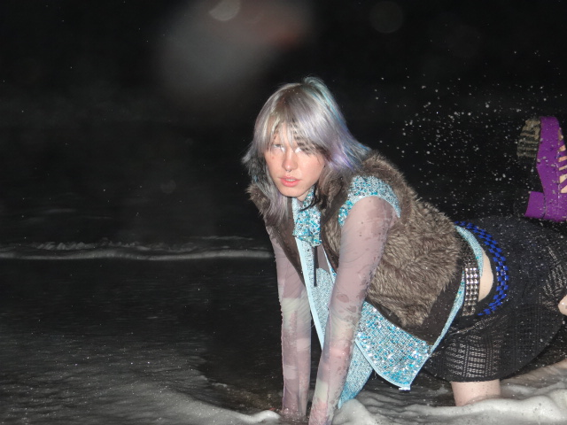

In their music, Androgyn creates electronic soundworlds of inhuman textures and complex harmony with constant shifts in aesthetics. With a heavy influence in dance music, she understands her music as dance music, regardless of tone or format. Synthesizing sounds from scratch and distorting samples beyond recognition, she indulges in a hyper-composer workflow with technical attention to each element.